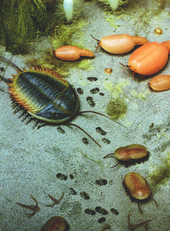

Esse período é subdividido em outros três: Vambriano inferior, Cambriano médio e Cambriano superior. De acordo com os indícios fossilíferos, durante esse período teria ocorrido uma das maiores expansões e diversificação de organismos. Segundo o geólogo inglês Adam Sedwick, que em 1835 foi quem primeiro definiu o período, o Cambriano é o marco inicial para que a Terra começasse a expansão orgânica, dando origem à vida. A partir daí começaram a surgir os primeiros animais com partes mineralizadas, decorrentes das rochas e fósseis que datam do período.
Além de um incontestável avanço nos biomas marinhos, a concentração de oxigênio gradativamente se elevava à medida que os seres fotossintetizantes se desenvolviam e multiplicavam, proporcionando indiretamente a estabilidade climática. É geralmente aceito que não houve plantas terrestres naquela época, embora seja provável que um aglomerado microbiano compreendendo fungos, algas e, possivelmente, líquens cobriram a terra. O clima do Período Cambriano era bem quente, pois naquela época ainda não havia glaciação.
https://bit.ly/2TPXrFw
Os locais onde se encontram rochas e fósseis deste período são relativamente raros, sendo os principais o Folhelho Burgess, no Canadá, o Folhelho de Maotianshan (ou biota de Chengjiang), na China e os argilitos de Emu Bay, na Austrália.
Sobre a geografia do planeta naquela época podemos destacar que a Terra possuía quatro continentes: os três pequenos próximos aos trópicos eram Laurência (parte central da América do Norte), Báltica (leste da Europa) e Sibéria (oeste da Rússia), entremeados pelo Oceano de Jápeto; além desses, havia o supercontinente Gondwana, ao sul. A concentração de dióxido de carbono na atmosfera era cerca de 18 vezes maior do que hoje, a maior em toda a história do planeta. Como o clima era bem quente, não existiam calotas polares, e os níveis d'água eram altos.
Ao final do período Cambriano, em torno de 488 milhões de anos atrás, o planeta passou por sua primeira extinção em massa. Suas causas ainda são desconhecidas, entretanto os cientistas suspeitam de uma queda na temperatura global, que veio a ocasionar a glaciação do final do Ordoviciano.

https://bit.ly/2ktX9Um
De qualquer forma, desapareceram 75% das espécies de trilobitas, 50% das espécies de esponjas e uma grande quantidade de graptólitos, braquiópodes*, equinodermos e moluscos. No total, 40% das espécies vivas. A extinção também marcou o fim do domínio dos dinocáridos - artrópodes marinhos semelhantes a camarões que devem ter sido os predadores de seu tempo. Encerrava-se, assim, o Cambriano.